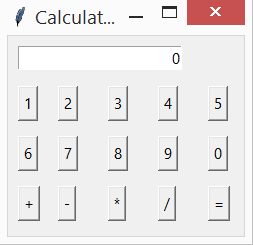

11. Tkinter. Визуализация калькулятора¶
На этом занятии создадим три визуальных представления калькулятора, используя отдельно три разных типа разметки: pack(), place(), grid(). Создадим окно:
from tkinter import *
root = Tk()
root.title("Calculator")
root.mainloop()
По желанию можно задать размер и запретить изменение размеров окна, добавив соответствую строку:
root.geometry("400x300")
root.resizable(False, False)
11.1. Метод - pack()¶
Создадим в окне визуальный элемент однострочное текстовое поле:
num = StringVar() # создадим переменную для отображения значений на табло калькулятора
num.set(0) # установим значение переменной равное 0
lbl = Entry(text=num, justify=RIGHT)
lbl.pack()
Для краткости кода можно подобный текста писать в одну строчку:
lbl = Entry(text=num, justify=RIGHT).pack()
Результат выполнения:
Теперь создадим кнопку добавив следующий код:
btn1 = Button(text=1).pack(side=LEFT)
Результат выполнения:
Добавим другие необходимые кнопки и получим следующий вид нашего калькулятора:
Разместим кнопки в три ряда. Для этого нам нужно воспользоваться вспомогательным виджетом Frame(). Для наглядности визуализации использую LabelFrame(). Важно соблюдать правильный порядок создания и размещения элементов! Логика создания элементов следующая:
- создаем рамку;
- создаем виджеты, которые будем хранить в нашей рамке и размещаем их в ней указав имя переменной, нашей рамки и упаковав виджет
- пакуем нашу рамку в окно
Код может выглядеть так:
from tkinter import *
root = Tk()
lf1 = LabelFrame(root, text="1 ряд")
lbl = Entry(lf1).pack()
lf1.pack()
root.mainloop()
Результат выполнения:

После преобразования разметки с использованием рамки - LabelFrame() калькулятор должен иметь вид подобный следующему:
При использовании Frame() - рамки без подписей, виджеты должны просто располагаться рядами: вплотную друг к другу.
11.2. Метод - place()¶
Используя метод place - места для размещения виджетов в окне достаточно указать абсолютное значение положения виджета от верхнего левого угла окна.
Пример кода может быть таким:
btn1 = Button(text=1).place(x=10, y=50)
где x - расстояние горизонтали, а y - по вертикали.
Если смещение задать по 50 пикселей, то созданное окно может иметь вид:
11.3. Метод - grid()¶
Grid - сетка, может являть наиболее удобным для создания сложных интерфейсов, т.к. проще в реализации, понимании и масштабируемости.
Пример кода с необходимыми атрибутами для решения задачи:
txtDisplay = Entry(textvariable=num, justify=RIGHT).grid(column=0, row=0, columnspan=5, sticky=NSEW)
При правильной полной реализации написания интерфейса результат может быть:

11.4. Современная визуализация¶
ttk (themed tk) - это расширение tk с новым набором виджетов. В ttk используется новый движок для создания виджетов. Этот движок обладает поддержкой тем и стилей оформления. Благодаря этому виджеты ttk выглядят более естественно в различных операционных системах.
Начиная с версий python 2.7 и 3.1.2 в Tkinter включён модуль для работы с ttk.
В ttk включены следующие виджеты, которые можно использовать вместо соответствующих виджетов tk: Button, Checkbutton, Entry, Frame, Label, LabelFrame, Menubutton, PanedWindow, Radiobutton, Scale и Scrollbar. Кроме того имеется несколько новых виджетов: Combobox, Notebook, Progressbar, Separator, Sizegrip и Treeview.
Чтобы переопределить основные виджеты Tk, импорт ttk должен следовать за импортом Tk:
from tkinter import *
from tkinter.ttk import *
Добавьте данные строки во все решения ваших калькуляторов и обратите внимания как измениться их внешний вид.
Вид калькулятора с методом pack и виджетами ttk:
Вид калькулятора с методом place и виджетами ttk:
Как мы видим после применения метода абсолютного позиционирования, проявляется основной недостаток: проблема масштабирования.
Вид калькулятора с методом grid и виджетами ttk: